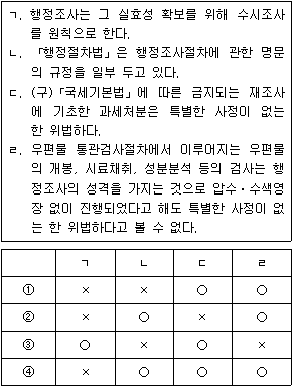

소방공무원(공개)-행정법총론 (2021-04-03 기출문제)
1. 행정벌에 대한 설명으로 옳지 않은 것은? (다툼이 있는 경우 판례에 의함)
- 과태료는 행정상의 질서유지를 위한 행정질서벌에 해당할 뿐 형벌이라 할 수 없어 죄형법정주의의 규율대상에 해당하지 않는다.
- 행정형벌은 행정법상 의무위반에 대한 제재로 과하는 처벌로 법인이 법인으로서 행정법상 의무자인 경우 그 의무위반에 대하여 형벌의 성질이 허용하는 한도 내에서 그 법인을 처벌하는 것은 당연하며, 행정범에 관한 한 법인의 범죄능력을 인정함이 일반적이나, 지방자치단체와 같은 공법인의 경우는 범죄능력 및 형벌능력 모두 부정된다.
- 과태료 재판은 이유를 붙인 결정으로써 하며, 결정은 당사자와 검사에게 고지함으로써 효력이 발생하고, 당사자와 검사는 과태료 재판에 대하여 즉시항고할 수 있으며 이 경우 항고는 집행정지의 효력이 있다.
- 행정청이 질서위반행위에 대하여 과태료를 부과하고자 하는 때에는 미리 당사자에게 과태료 부과의 원인이 되는 사실, 과태료 금액 및 적용법령 등을 통지하고 10일 이상의 기간을 정하여 의견을 제출할 기회를 주어야 한다.
(정답률: 67%)

2. 행정상 강제집행에 대한 설명으로 옳지 않은 것은? (다툼이 있는 경우 판례에 의함)
- 대집행은 비금전적인 대체적 작위의무를 의무자가 이행하지 않는 경우 행정청이 스스로 의무자가 행하여야 할 행위를 하거나 제3자로 하여금 행하게 하는 것으로, 그 대집행의 대상은 공법상 의무에만 한정하지 않는다.
- 행정청이 대집행에 대한 계고를 함에 있어서 의무자가 스스로 이행하지 아니하는 경우 대집행할 행위의 내용과 범위가 구체적으로 특정되어야 하지만, 그 내용 및 범위는 대집행계고서에 의해서만 특정되어야 하는 것은 아니고 그 처분 전후에 송달된 문서나 기타 사정을 종합하여 이를 특정할 수 있으면 족하다.
- 비상시 또는 위험이 절박한 경우에 있어 당해 행위의 급속한 실시를 요하여 대집행영장에 의한 통지절차를 취할 여유가 없을 때에는 이 절차를 거치지 아니하고 대집행할 수 있다.
- 개발제한구역 내의 건축물에 대하여 허가를 받지 않고 한 용도변경행위에 대한 형사처벌과 「건축법」 제83조제1항에 의한 시정명령 위반에 대한 이행강제금 부과는 이중처벌에 해당하지 아니한다.
(정답률: 67%)
3. 「행정절차법」에 대한 설명으로 옳지 않은 것은?
- 공청회는 다른 법령 등에서 공청회를 개최하도록 규정하고 있는 경우 또는 당해 처분의 영향이 광범위하여 널리 의견을 수렴할 필요가 있다고 행정청이 인정하는 경우에 개최된다.
- 행정응원을 위하여 파견된 직원은 당해 직원의 복무에 관하여 다른 법령 등에 특별한 규정이 없는 한, 응원을 요청한 행정청의 지휘⋅감독을 받는다.
- 행정응원에 소요되는 비용은 응원을 요청한 행정청이 부담하며, 그 부담금액 및 부담방법은 응원을 행하는 행정청의 결정에 의한다.
- 송달이 불가능하여 관보, 공보 등에 공고한 경우에는 다른 법령등에 특별한 규정이 있는 경우를 제외하고 공고일부터 14일이 경과한 때에 그 효력이 발생한다. 다만, 긴급히 시행하여야 할 특별한 사유가 있어 효력 발생 시기를 달리 정해 공고한 경우에는 그에 따른다.
(정답률: 72%)
4. 행정행위에 대한 설명으로 옳지 않은 것은? (다툼이 있는 경우 판례에 의함)
- 개발제한구역 내의 건축물의 용도변경에 대한 예외적 허가는 그 상대방에게 제한적이므로 기속행위에 속하는 것이다.
- 농지처분의무통지는 단순한 관념의 통지에 불과하다고 볼 수 없고, 상대방인 농지소유자의 의무에 직접 관계되는 독립한 행정처분으로서 항고소송의 대상이 된다.
- 행정청이 (구)「식품위생법」규정에 의하여 영업자지위승계신고를 수리하는 처분은 종전의 영업자의 권익을 제한하는 처분에 해당하므로, 행정청은 이를 처리함에 있어 종전의 영업자에 대하여 처분의 사전통지, 의견청취 등 「행정절차법」상의 처분절차를 거쳐야 한다.
- 부담은 행정청이 행정행위를 하면서 일방적으로 부가할 수도 있지만 부담을 부가하기 이전에 상대방과 협의하여 부담의 내용을 협약의 형식으로 미리 정한 다음 행정행위를 하면서 부가할 수도 있다.
(정답률: 70%)
5. 행정행위의 존속력에 관한 설명으로 옳지 않은 것은? (다툼이 있는 경우 판례에 의함)
- 불가변력은 처분청에 미치는 효력이고, 불가쟁력은 상대방 및 이해관계인에게 미치는 효력이다.
- 불가쟁력이 생긴 경우에도 국가배상청구를 할 수 있다.
- 불가변력이 있는 행위가 당연히 불가쟁력을 발생시키는 것은 아니다.
- 불가쟁력은 실체법적 효력만 있고, 절차법적 효력은 전혀 가지고 있지 않다.
(정답률: 73%)
6. 「행정심판법」상 위원회에 대한 설명으로 옳지 않은 것은?
- 중앙행정심판위원회의 비상임위원은 일정한 요건을 갖춘 사람 중에서 중앙행정심판위원회 위원장의 제청으로 국무총리가 성별을 고려하여 위촉한다.
- 중앙행정심판위원회의 회의는 위원장, 상임위원 및 위원장이 회의마다 지정하는 비상임위원을 포함하여 총 15명으로 구성한다.
- 「행정심판법」 제10조에 의하면, 위원장은 제척신청이나 기피신청을 받으면 제척 또는 기피 여부에 대한 결정을 한다.
- 중앙행정심판위원회는 위원장 1명을 포함하여 70명 이내의 위원으로 구성한다.
(정답률: 53%)
7. 다음 설명 중 옳지 않은 것은? (다툼이 있는 경우 판례에 의함)
- 건설부장관(현 국토교통부장관)이 행한 국립공원지정처분에 따른 경계측량 및 표지의 설치 등은 처분이 아니다.
- 행정지도가 구술로 이루어지는 경우 상대방이 행정지도의 취지⋅내용 및 신분을 기재한 서면의 교부를 요구하면 당해 행정지도를 행하는 자는 직무수행에 특별한 지장이 없는 한 이를 교부하여야 한다.
- 조례가 집행행위의 개입 없이도 그 자체로서 직접 국민의 구체적인 권리⋅의무나 법적 이익에 영향을 미치는 등의 법률상 효과를 발생하는 경우 그 조례는 항고소송의 대상이 되는 행정처분에 해당한다.
- 행정계획은 현재의 사회⋅경제적 모든 상황의 조사를 바탕으로 장래를 예측하여 수립되고 장기간에 걸쳐 있으므로, 행정계획의 변경은 인정되지 않는다.
(정답률: 75%)
8. 다음 설명 중 옳지 않은 것은? (다툼이 있는 경우 판례에 의함)
- 원고가 단지 1회 훈령에 위반하여 요정출입을 하다가 적발된 정도라면, 면직처분보다 가벼운 징계처분으로서도 능히 위 훈령의 목적을 달성할 수 있다고 볼 수 있는 점에서 이 사건 파면처분은 이른바 비례의 원칙에 어긋난 것으로 위법하다고 판시하였다.
- 수입 녹용 중 일정성분이 기준치를 0.5% 초과하였다는 이유로 수입 녹용 전부에 대하여 전량 폐기 또는 반송처리를 지시한 처분은 재량권을 일탈⋅남용한 경우에 해당한다고 판시하였다.
- 청소년유해매체물로 결정⋅고시된 만화인 사실을 모르고 있던 도서대여업자가 그 고시일로부터 8일 후에 청소년에게 그 만화를 대여한 것을 사유로 그 도서대여업자에게 금 700만원의 과징금이 부과된 경우, 그 과징금부과처분은 재량권을 일탈⋅남용한 것으로서 위법하다고 판시하였다.
- 사법시험 제2차 시험에 과락제도를 적용하고 있는 (구)사법시험령 제15조 제2항은 비례의 원칙, 과잉금지의 원칙, 평등의 원칙에 위반되지 않는다고 판시하였다.
(정답률: 76%)
9. 「개인정보 보호법」상 개인정보 단체소송에 대한 설명으로 옳지 않은 것은?
- 단체소송의 원고는 변호사를 소송대리인으로 선임하여야 한다.
- 단체소송에 관하여 「개인정보 보호법」에 특별한 규정이 없는 경우에는 「민사소송법」을 적용한다.
- 법원은 개인정보처리자가 분쟁조정위원회의 조정을 거부하지 않을 경우에만, 결정으로 단체소송을 허가한다.
- 단체소송의 절차에 관하여 필요한 사항은 대법원규칙으로 정한다.
(정답률: 61%)
10. 「행정소송법」에 대한 설명으로 옳은 것은? (다툼이 있는 경우 판례에 의함)
- 민중소송 및 기관소송은 법률이 정한 자에 한하여 제기할 수 있다.
- 판례는 「행정소송법」상 행정청의 부작위에 대하여 부작위위법확인소송과 작위의무이행소송을 인정하고 있다.
- 「행정소송법」상 항고소송은 취소소송⋅무효등 확인소송⋅부작위위법확인소송⋅당사자소송으로 구분한다.
- 국가 또는 공공단체의 기관이 법률에 위반되는 행위를 한 때에 직접 자기의 법률상 이익과 관계없이 그 시정을 구하기 위하여 제기하는 소송을 기관소송이라 한다.
(정답률: 48%)
11. 「국가배상법」에 대한 설명으로 옳지 않은 것은? (다툼이 있는 경우 판례에 의함)
- 판례는 「자동차손해배상 보장법」은 배상책임의 성립요건에 관하여는 「국가배상법」에 우선하여 적용된다고 판시하였다.
- 헌법재판소는 「국가배상법」 제2조 제1항 단서 이중배상금지규정에 대하여 헌법에 위반되지 아니한다고 판시하였다.
- 생명⋅신체의 침해로 인한 국가배상을 받을 권리는 양도는 가능하지만, 압류는 하지 못한다.
- 판례는 「국가배상법」제5조의 영조물의 설치⋅관리상의 하자로 인한 손해가 발생한 경우, 피해자의 위자료 청구권이 배제되지 아니한다고 판시하였다.
(정답률: 67%)
12. 행정상의 법률관계와 소송형태 등에 관한 설명으로 옳지 않은 것은? (다툼이 있는 경우 판례에 의함)
- 「도시 및 주거환경정비법」상의 주택재건축정비사업조합을 상대로 관리처분계획안에 대한 조합 총회결의의 무효확인을 구하는 소는 공법관계이므로 당사자소송을 제기하여야 한다.
- 「국가를 당사자로 하는 계약에 관한 법률」에 따라 국가가 당사자로 되는 입찰방식에 의한 사인과 체결하는 이른바 공공계약은 국가가 사경제의 주체로서 상대방과 대등한 위치에서 체결하는 사법상의 계약이다.
- 「국유재산법」에 따른 국유재산의 무단점유자에 대한 변상금 부과⋅징수권은 민사상 부당이득반환청구권과 법적 성질을 달리하므로, 국가는 무단점유자를 상대로 변상금 부과⋅징수권의 행사와 별개로 국유재산의 소유자로서 민사상 부당이득반환청구의 소를 제기할 수 있다.
- 2020년 4월 1일부터 시행되는 전부개정 「소방공무원법」 이전의 경우, 지방소방공무원의 보수에 관한 법률관계는 사법상의 법률관계이므로 지방소방공무원이 소속 지방자치단체를 상대로 초과근무수당의 지급을 구하는 소송은 행정소송상 당사자소송이 아닌 민사소송절차에 따라야 했다.
(정답률: 61%)
13. 행정행위의 성립과 효력에 관한 설명으로 옳은 것은? (다툼이 있는 경우 판례에 의함)
- 일반적으로 행정행위가 주체⋅내용⋅절차와 형식의 요건을 모두 갖추고 외부에 표시된 경우에 행정행위의 존재가 인정된다.
- 행정청의 의사가 외부에 표시되어 행정청이 자유롭게 취소⋅철회할 수 없는 구속을 받게 되는 시점에 행정행위가 성립하는 것은 아니며, 행정행위의 성립 여부는 행정청의 의사를 공식적인 방법으로 외부에 표시하였는지 여부를 기준으로 판단해야 한다.
- 「행정절차법」은 행정행위 상대방에 대한 송달받을 자의 주소 등을 통상적인 방법으로 확인할 수 없는 경우에 한하여, 공고의 방법에 의한 송달이 가능하도록 규정하고 있다.
- 상대방 있는 행정처분이 상대방에게 고지되지 아니한 경우에도 상대방이 다른 경로를 통해 행정처분의 내용을 알게 된다면 그 행정처분의 효력이 발생한다.
(정답률: 46%)
14. 행정대집행에 관한 설명으로 옳지 않은 것은? (다툼이 있는 경우 판례에 의함)
- 대집행의 근거법으로는 대집행에 관한 일반법인 「행정대집행법」과 대집행에 관한 개별법 규정이 있다.
- 대집행의 요건을 충족한 경우에 행정청이 대집행을 할 것인지 여부에 관해서 소수설은 재량행위로 보나, 다수설과 판례는 기속행위로 본다.
- 대집행의 절차인 ‘대집행의 계고’의 법적 성질은 준법률행위적 행정행위이므로 계고 그 자체가 독립하여 항고소송의 대상이나, 2차 계고는 새로운 철거의무를 부과하는 것이 아니고 대집행기한의 연기 통지에 불과하므로 행정처분으로 볼 수 없다는 판례가 있다.
- 계고처분의 후속절차인 대집행에 위법이 있다고 하여 그와 같은 후속절차에 위법성이 있다는 점을 들어 선행절차인 계고처분이 부적법하다는 사유로 삼을 수는 없다.
(정답률: 60%)
15. 행정지도에 관한 설명으로 옳지 않은 것은? (다툼이 있는 경우 판례에 의함)
- 행정지도란 행정기관이 그 소관 사무의 범위에서 일정한 행정목적을 실현하기 위하여 특정인에게 일정한 행위를 하거나 하지 아니하도록 지도, 권고, 조언 등을 하는 행정작용을 말한다.
- 행정지도 중 규제적⋅구속적 행정지도의 경우에는 법적근거가 필요하다는 견해가 있다.
- 교육인적자원부장관(현 교육부장관)의 (구)공립대학 총장들에 대한 학칙시정요구는 고등교육법령에 따른 것으로, 그 법적 성격은 대학총장의 임의적인 협력을 통하여 사실상의 효과를 발생시키는 행정지도의 일종으로 헌법소원의 대상이 되는 공권력의 행사로 볼 수 없다.
- 행정지도가 강제성을 띠지 않은 비권력적 작용으로서 행정지도의 한계를 일탈하지 아니하였다면, 그로 인해 상대방에게 어떤 손해가 발생하였다고 해도 행정기관은 그에 대한 손해배상책임이 없다.
(정답률: 58%)
16. 행정조사에 관한 설명으로 옳은 것(○)과 옳지 않은 것(×)을 바르게 표기한 것은? (다툼이 있는 경우 판례에 의함)

- ①
- ②
- ③
- ④
(정답률: 42%)
17. 행정행위에 관한 설명으로 옳지 않은 것은? (다툼이 있는 경우 판례에 의함)
- 행정행위의 부관 중 행정행위에 부수하여 그 상대방에게 일정한 의무를 부과하는 행정청의 의사표시인부담은 그 자체만으로 행정소송의 대상이 될 수 있다.
- 현역입영대상자는 현역병입영통지처분에 따라 현실적으로 입영을 하였다 할지라도, 입영 이후의 법률관계에 영향을 미치고 있는 현역병입영통지처분을 한 관할지방병무청장을 상대로 위법을 주장하여 그 취소를 구할 수 있다.
- 재량행위가 법령이나 평등원칙을 위반한 경우뿐만 아니라 합목적성의 판단을 그르친 경우에도 위법한 처분으로서 행정소송의 대상이 된다.
- 허가의 신청 후 법령의 개정으로 허가기준이 변경된 경우에는 신청할 당시의 법령이 아닌 행정행위 발령 당시의 법령을 기준으로 허가 여부를 판단하는 것이 원칙이다.
(정답률: 36%)
18. 행정행위의 하자에 관한 설명으로 옳지 않은 것은? (다툼이 있는 경우 판례에 의함)
- 행정처분의 대상이 되는 법률관계나 사실관계가 있는 것으로 오인할 만한 객관적인 사정이 있고 사실관계를 정확히 조사하여야만 그 대상이 되는지 여부가 밝혀질 수 있는 경우에는 비록 그 하자가 중대하더라도 명백하지 않아 무효로 볼 수 없다.
- 조례 제정권의 범위를 벗어나 국가사무를 대상으로 한 무효인 조례의 규정에 근거하여 지방자치단체의 장이 행정처분을 한 경우 그 행정처분은 하자가 중대하나, 명백하지는 아니하므로 당연무효에 해당하지 아니한다.
- 보충역편입처분에 하자가 있다고 할지라도 그것이 중대하고 명백하지 않는 한, 그 하자를 이유로 공익근무요원소집처분의 효력을 다툴 수 없다.
- 부동산에 관한 취득세를 신고하였으나 부동산매매계약이 해제됨에 따라 소유권 취득의 요건을 갖추지 못한 경우에는 그 하자가 중대하지만 외관상 명백하지 않아 무효는 아니며 취소할 수 있는 데 그친다.
(정답률: 35%)
19. 국가배상책임에 관한 설명으로 옳지 않은 것은? (다툼이 있는 경우 판례에 의함)
- 「국가배상법」에서는 공무원 개인의 피해자에 대한 배상책임을 인정하는 명시적인 규정을 두고 있지 않다.
- 공무원증 발급업무를 담당하는 공무원이 대출을 받을 목적으로 다른 공무원의 공무원증을 위조하는 행위는 「국가배상법」 제2조 제1항의 직무집행관련성이 인정되지 않는다.
- 군교도소 수용자들이 탈주하여 일반 국민에게 손해를 입혔다면 국가는 그로 인하여 피해자들이 입은 손해를 배상할 책임이 있다.
- 「국가배상법」 제2조 제1항 단서에 의해 군인 등의 국가배상청구권이 제한되는 경우, 공동불법행위자인 민간인은 피해를 입은 군인 등에게 그 손해 전부에 대하여 배상하여야 하는 것은 아니며 자신의 부담부분에 한하여 손해배상의무를 부담한다.
(정답률: 60%)
20. 다음 설명 중 옳지 않은 것은? (다툼이 있는 경우 판례에 의함)
- 지방자치단체가 옹벽시설공사를 업체에게 주어 공사를 시행하다가 사고가 일어난 경우, 옹벽이 공사 중이고 아직 완성되지 아니하여 일반 공중의 이용에 제공되지 않았다면 「국가배상법」 제5조 소정의 영조물에 해당한다고 할 수 없다.
- 김포공항을 설치⋅관리함에 있어 항공법령에 따른 항공기 소음기준 및 소음대책을 준수하려는 노력을 하였더라도, 공항이 항공기 운항이라는 공공의 목적에 이용됨에 있어 그와 관련하여 배출하는 소음 등의 침해가 인근 주민들에게 통상의 수인한도를 넘는 피해를 발생하게 하였다면 공항의 설치⋅관리상에 하자가 있다고 보아야 한다.
- 가변차로에 설치된 두 개의 신호기에서 서로 모순되는 신호가 들어오는 고장으로 인하여 사고가 발생한 경우, 그 고장이 현재의 기술 수준상 부득이한 것으로 예방할 방법이 없는 것이라면 손해발생의 예견가능성이나 회피가능성이 없어 영조물의 하자를 인정할 수 없다.
- 영조물 설치자의 재정사정이나 영조물의 사용목적에 의한 사정은, 안전성을 요구하는 데 대한 참작사유는 될지언정 안전성을 결정지을 절대적 요건은 아니다.
(정답률: 61%)